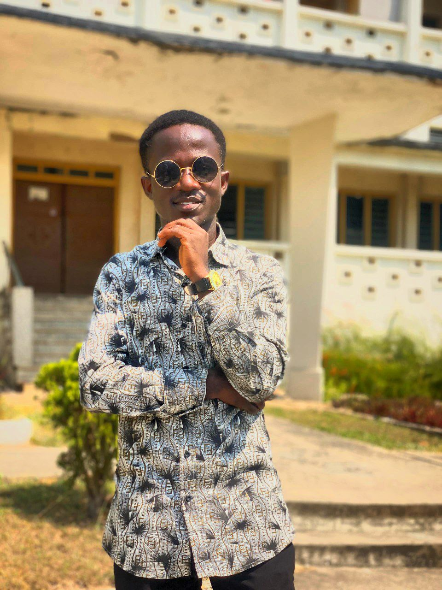
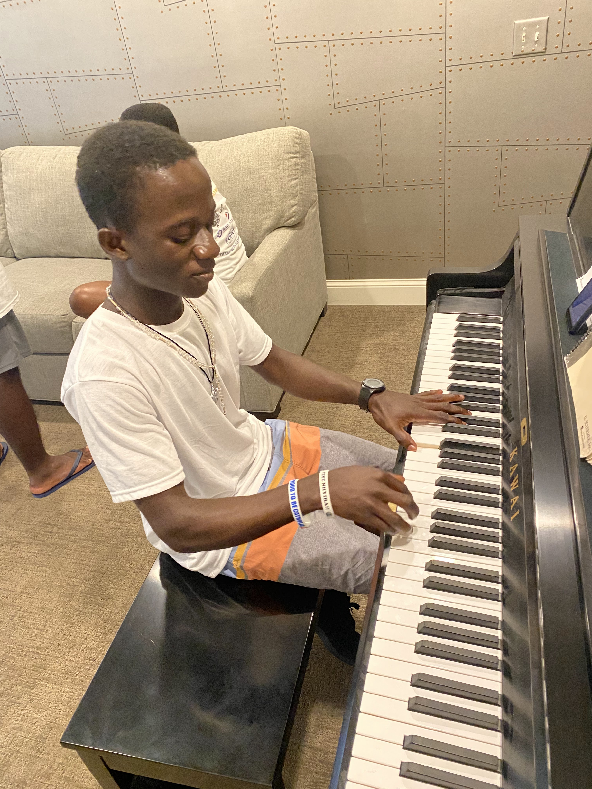
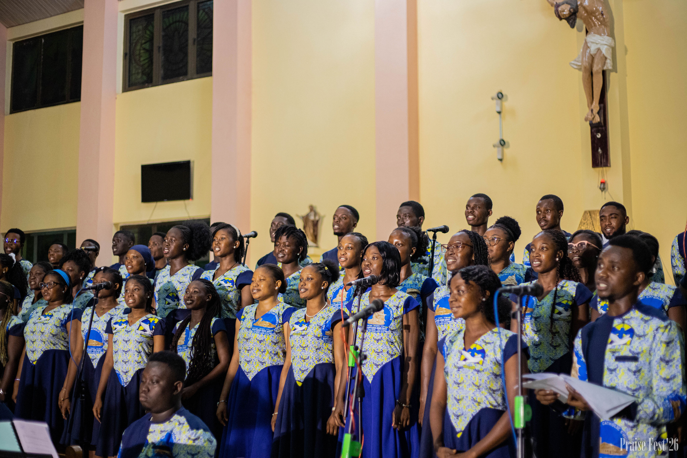
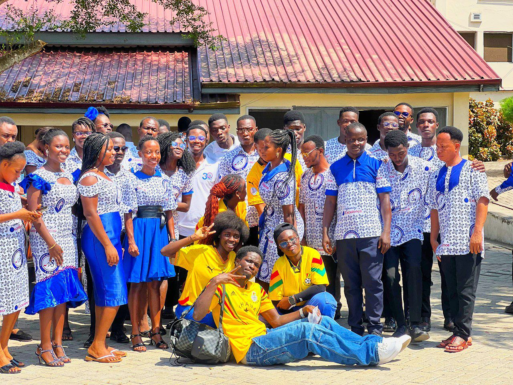
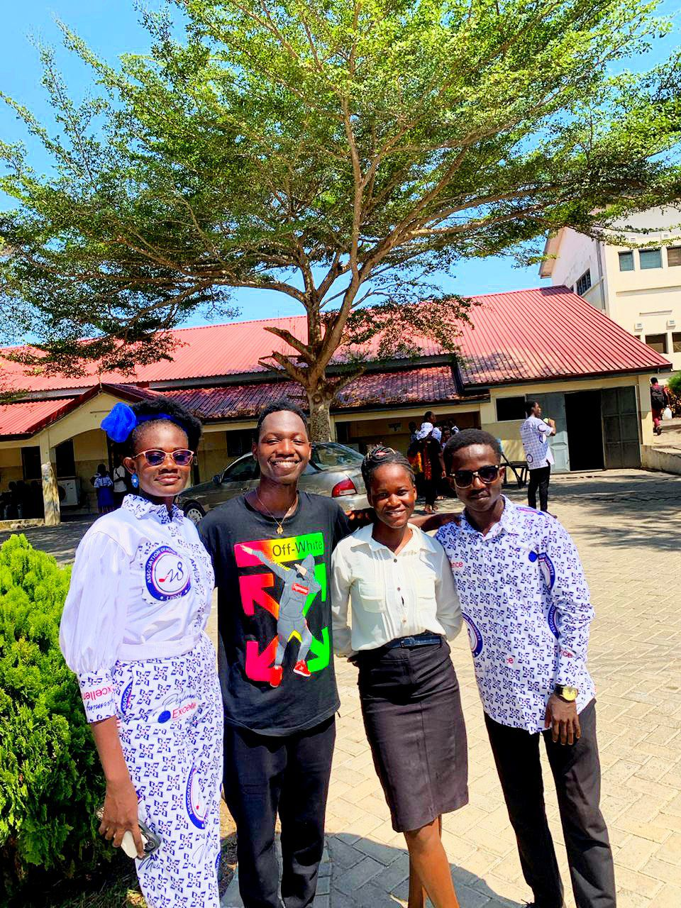
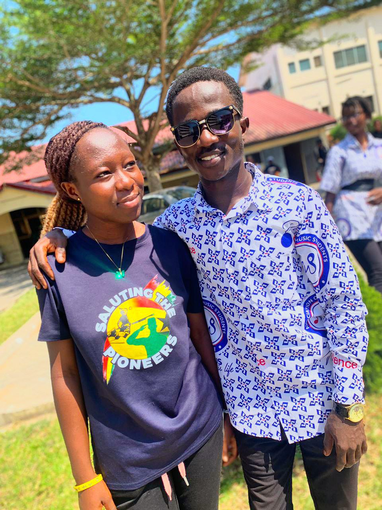
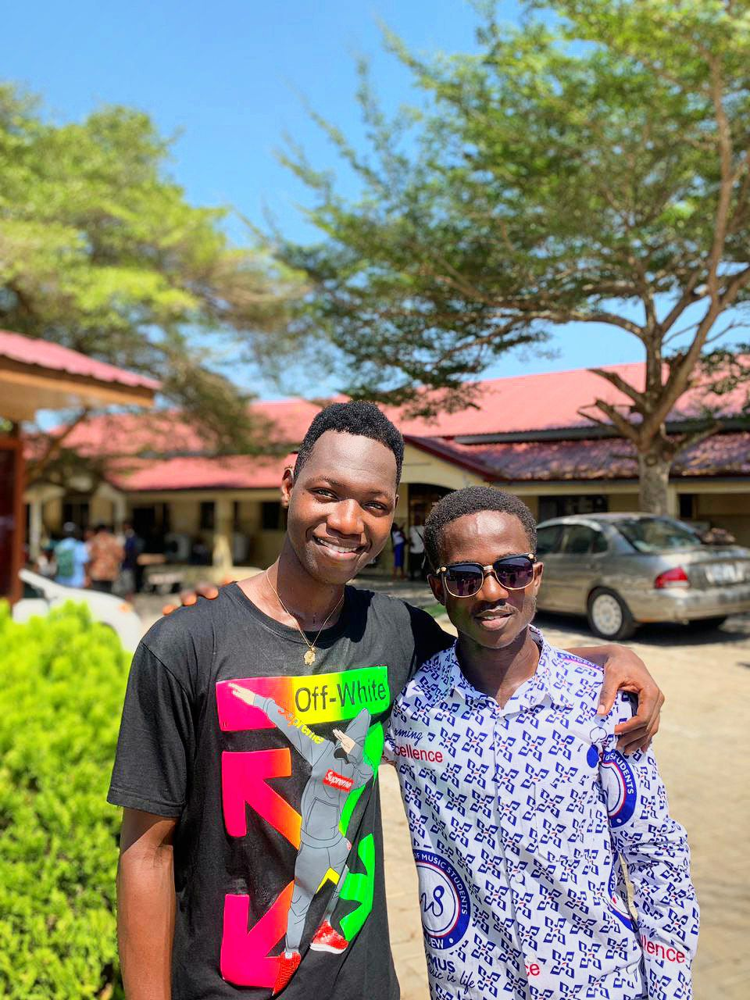

Education
Learning, teaching, skills, opportunity, and the role education plays in shaping people's futures.
Thinking deeply. Creating freely. Sharing ideas.
WELCOME TO NKETIA-MARFO
I’m Nketia-Marfo. This is my personal space for sharing ideas, stories, projects, and perspectives on education, economics, music, society, culture, and opportunities.
I am curious about how ideas become opportunities, how creativity can create possibilities, and how knowledge can make a meaningful difference.


A PLACE FOR IDEAS
I enjoy learning, asking questions, creating, and finding connections between ideas that may initially seem unrelated.
EDUCATION
Education is not simply about collecting certificates. It should help people develop knowledge, useful skills, confidence and the ability to see possibilities.
I am interested in how teaching and learning can connect classroom knowledge with real opportunities. I also care about the questions students carry with them beyond the classroom.
Read more ideas →

LEARNING
Some lessons come from books. Others come from conversations, people, challenges and everyday experiences. I believe all of them can shape the way we understand the world.
EXPLORE
My interests move across different areas that shape how people learn, create, work, and build their futures.
Learning, teaching, skills, opportunity, and the role education plays in shaping people's futures.
Work, money, development, investment, entrepreneurship, and opportunity.
Music, performance, creativity, culture, and artistic expression.
Questions about society, communities, the environment, and the world around us.

ECONOMICS & OPPORTUNITY
I am fascinated by the relationship between education, skills, money, investment and work.
Economics helps us ask deeper questions about how people make decisions, why businesses grow, why some communities struggle to access opportunities, and how young people can turn skills into meaningful work.
Explore my thinking →
IDEAS & WORK
I think about how young people can move from learning skills to finding ways to use those skills, serve others and create sustainable opportunities.
THE BIGGER QUESTION
This question sits at the centre of many things I enjoy thinking about — education, entrepreneurship, economics, creativity and the future of young people.
I believe good ideas become more meaningful when they can improve someone's possibilities.

MUSIC & CREATIVITY
Music is more than entertainment. It can connect people, preserve culture, educate communities, and create opportunities.
I am interested in understanding how creativity can grow into meaningful work while remaining connected to culture, education and purpose.
Explore my interests →


CREATIVE EXPRESSION
Through music and creative expression, I continue exploring how people communicate, preserve culture and connect with one another.
LATEST THOUGHT
Education should be more than simply completing school. It should help people develop useful skills, understand their environment, and discover meaningful opportunities.
Read the story →MOMENTS & JOURNEY
Beyond writing and ideas, this space captures some of the moments, experiences, creativity, learning and memories that continue to shape my journey.






BEYOND THE SCREEN
The ideas I share are connected to the world around me — the people I meet, the questions I ask, the things I learn, and the experiences that make me think more deeply.
I believe meaningful ideas do not always begin in a classroom. Sometimes they begin with a conversation, a song, a community, a challenge, a book, or a simple question that refuses to disappear.
Learn more about me →MUSIC • CREATIVITY • CULTURE
Music and creativity remain an important part of how I express myself, connect with people, and understand culture.



COMMUNITY & SOCIETY
I am interested in the issues that affect communities and the people who live in them.
Questions about education, work, the environment, culture and society often connect with one another. Understanding those connections can help us think about better possibilities.
Visit the blog →
KEEP EXPLORING
This website is a growing collection of thoughts, stories, interests, experiences and conversations. There is always more to learn, create and share.
LET'S CONNECT
Have an idea, question, opportunity, or something interesting to discuss?
Contact Me →